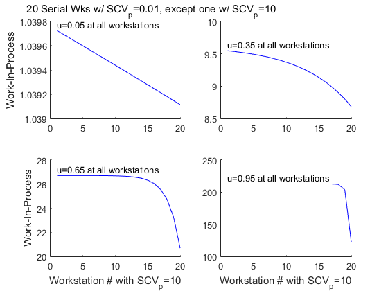
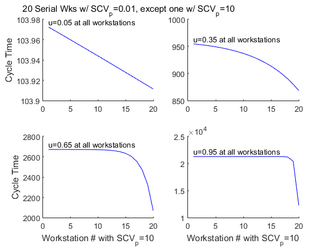
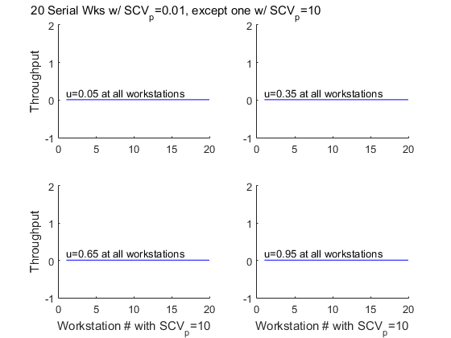
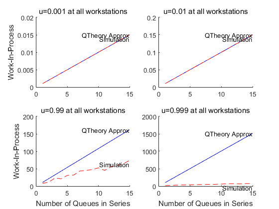
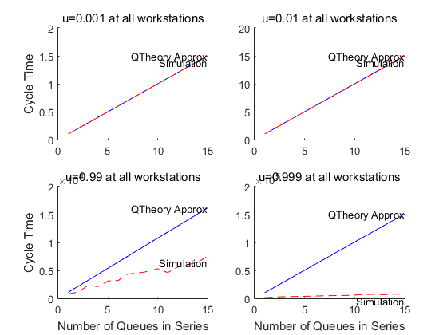
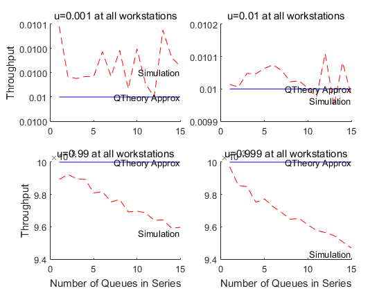

Multiple Workstations In Series
The contents of the MultipleWorkstationsInSeries folder within the ProductionLineModels folder concern certain results from queueing theory applied to the analysis of a production line. Of interest here is a "linking equation" (equations 8.10-8.11 in Hopp & Spearman, ed. 2) to characterize the departure process of one workstation, which may be the arrival process to the next. This approximation enables extending single-workstation analytical approximations for Work-In-Process, Cycle Time, and Throughput to production lines built of multiple workstations in series.
A natural extension, not implemented at the time of writing, is to implement analytical results for the thinning of a Poisson process. Should the departure process from a single workstation be approximately a Poisson process, then single-workstation analytical approximations for Work-In-Process, Cycle Time, and Throughput could also be extended to production lines built of multiple workstations with parallel branches.
One contribution in this section is an implementation of these analytical formulas, and an additional contribution concerns simulation, specifically a simulation generator to assemble production lines of single workstation library blocks in series.
Most importantly, a small number of DEMO scripts is included showing how to use the analytical formulas, the simulation model generator, and both to compare their results. Each DEMO script is a usage example, an illustration of what is possible, an idea for a lab experiment. The collection is certainly not exhaustive, and it is hoped that they will inspire users to create more, plus transcribe the good ones into carefully-defined lab experiments for education. The remainder of this overview summarizes what the included DEMO scripts do.
Contents
Analytical Approximation: Multiple Workstations in Series
The following demo uses the closed-form queueing theory approximations from Hopp & Spearman, chapter 8, plus the linking equation to characterize a single workstation's departure process. Multiple workstations are arranged in series, all with a low processing time variability, except one with very high variability. Of interest is how the relative position of the high- variability workstation (e.g. first, middle, last) affects the overall system performance measures of work-in-process, cycle time, and throughput. The expected result is the farther upstream the high-variability workstation resides, the more damaging it is on overall system performance measures.
Parameters which can be changed by a user include interarrival time mean & variability, processing time means (one subplot for each) and variability (both the small SCV value for all workstations except one, and the large SCV value for the one aberrant workstation), the number of workstations in series, and the number of servers at each workstation.
DEMO_QTheory_SweepLargeSCV_MultipleSerialWorkstationsThCtWip  
Analytical Approximation vs Simulation: Multiple Workstations in Series
The following demo compares queueing theory approximations and discrete-event simulation. It evaluates the performance measures work-in-process, cycle time, and throughput for multiple workstations in series in two different ways: (1) Using closed-form queueing theory approximations from Hopp & Spearman, including the linking equation to characterize each workstation's departure process, and (2) Using discrete-event simulation.
Analytical approximations and simulation are compared for an increasing number of workstations in series (two, then three, then four, ...). Evaluation is also over a range of utilizations (with each workstation having the same value), because the linking equation is a function of utilization and the goal is to evaluate the linking equation's fidelity.
Parameters which can be changed by a user include interarrival time distribution, mean, and variability, processing time distribution, means (one subplot for each), and variability, the type of single workstations assembled in series (plain vanilla, with preemptive failures, with non- preemptive setups, with batching), and each workstation's queue capacity and number of servers.
UPDATE: The PARALLEL version of this demo supercedes the SERIAL version. It should produce exactly the same results, just much faster. It introduces parallelization by replacing several nested FOR loops with a single PARFOR loop, which by default will start and use as many background MATLAB sessions as your processor has cores.
%DEMO_QTvsSim_SweepNWks_MultipleInSeriesThCtWipU_SERIAL
DEMO_QTvsSim_SweepNWks_MultipleInSeriesThCtWipU_PARALLEL
  